My Education ✎ᝰ |
Kindergarten 🧸 |
|
|
Education has always played a very important role in my life. My learning journey began at Tadika KEMAS, where I took my first steps in reading, writing and building confidence. It was a fun and meaningful experience that helped me develop an early love for learning and interacting with others. I still remember the excitement of joining group activities, singing songs and doing simple crafts with my classmates. Those moments taught me how to be creative, patient and cooperative with others. My time at Tadika KEMAS built a strong foundation for my future education and gave me the curiosity to keep learning new things. |
| 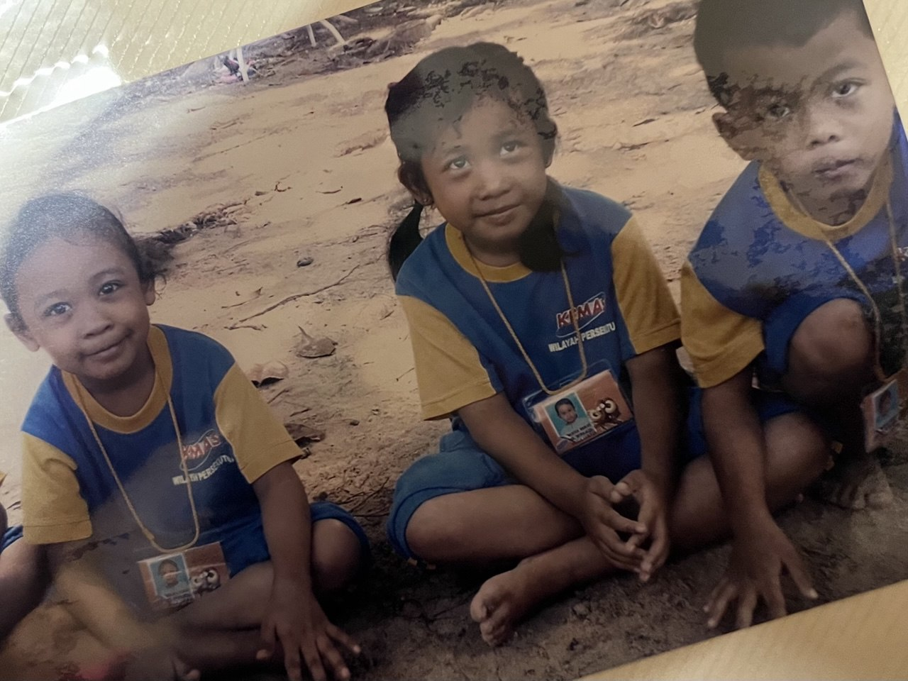 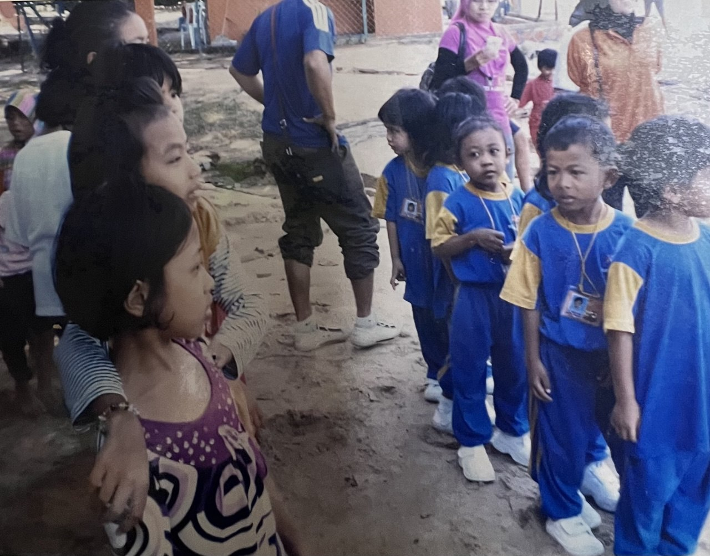 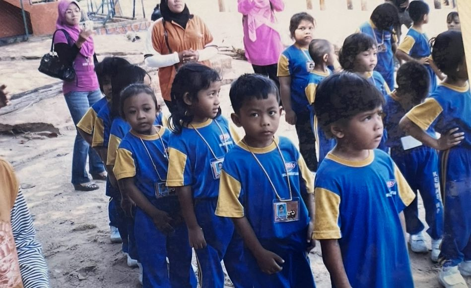 | |
Primary School 🍬 |
|
I continued my early education at Sekolah Kebangsaan Danau Kota, where I learned the basic values of discipline, respect and teamwork.
My primary school years were full of wonderful memories and I learned how to communicate and work together with friends.
My teachers there taught me the importance of studying hard and being responsible. |
|
| 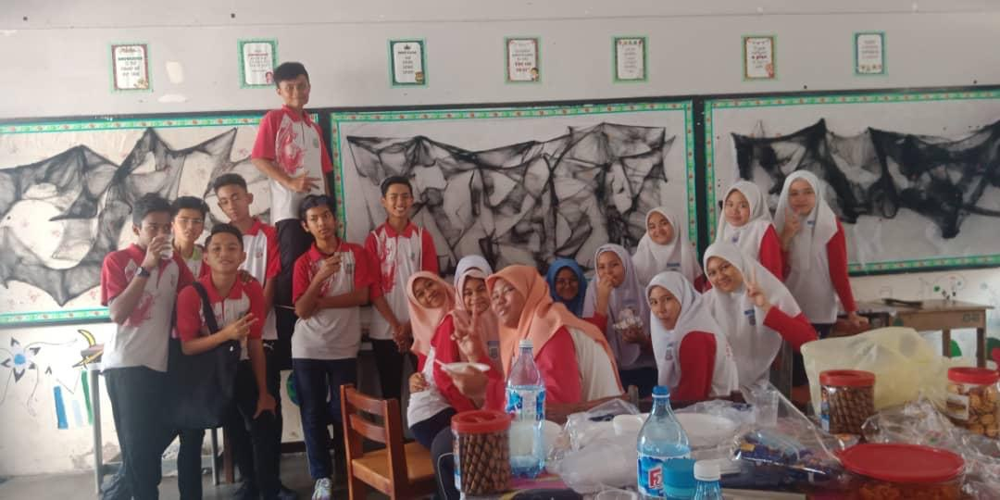 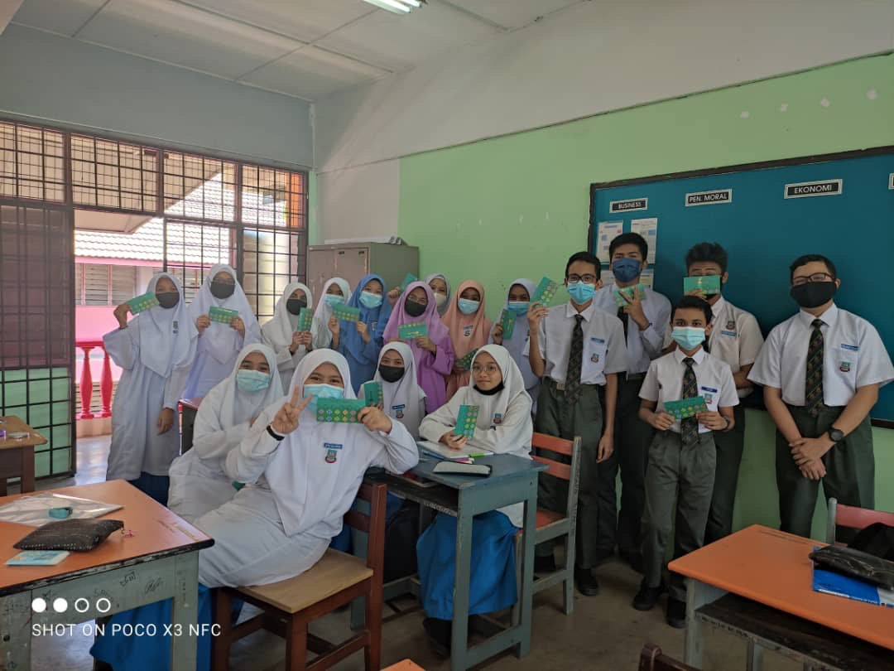 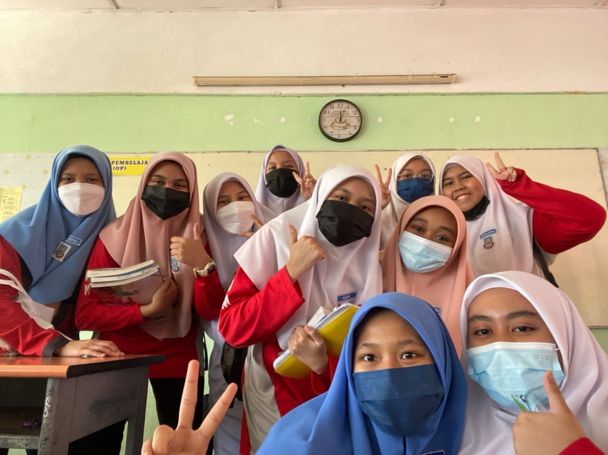 | |
Secondary School 📝 |
|
After finishing primary school, I continued my studies at Sekolah Menengah Kebangsaan Wangsa Melawati.
During my secondary school years, I became more focused on my studies and started to develop a strong interest in technology and digital learning.
I participated in several school activities that helped me improve my communication and leadership skills.
My school environment also encouraged me to be confident and independent. |
|
| 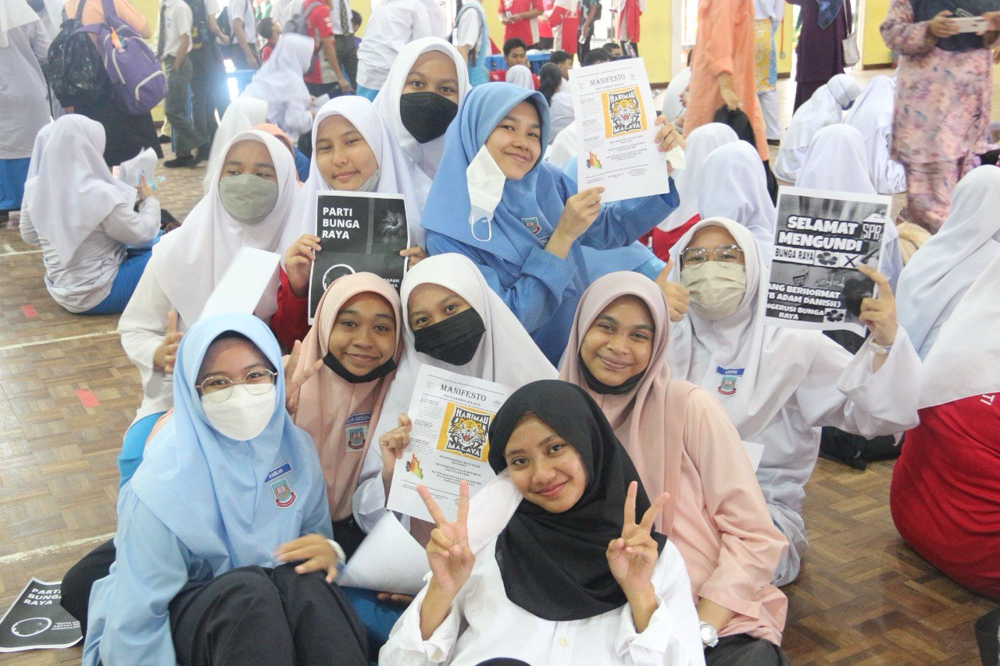 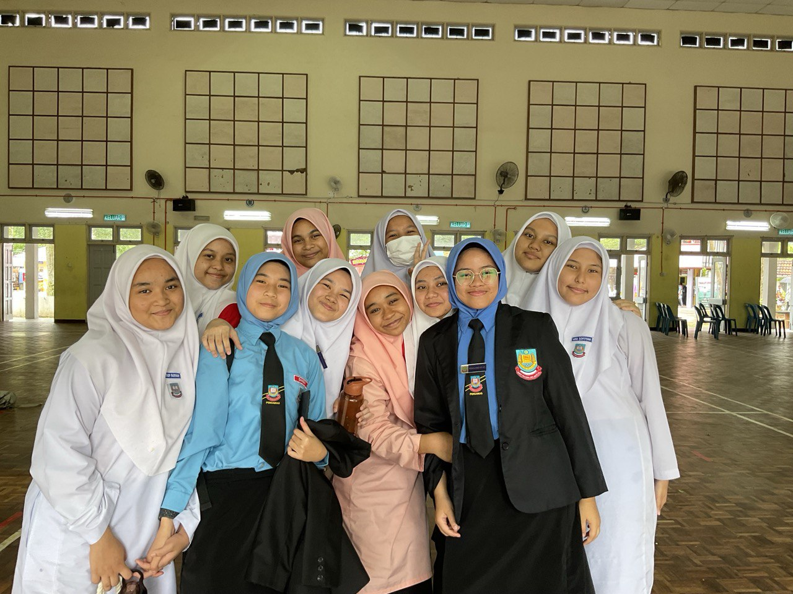 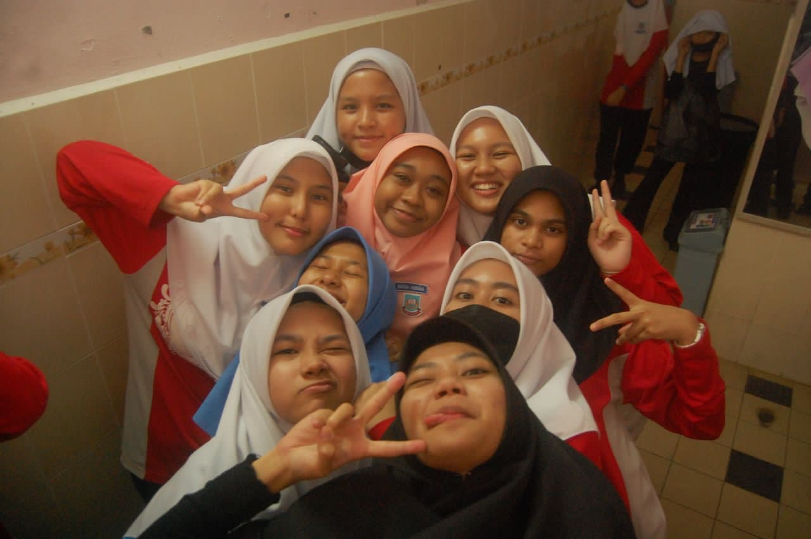 | |
University 🎓 |

|
After finishing my secondary school, I continued my studies at UiTM Rembau.
During my time at UiTM, I became more focused on my academic and practical skills, especially in my chosen field of study.
I participated in various campus activities and projects that helped me improve my communication, teamwork, and leadership abilities.
The university environment also encouraged me to be confident, independent, and proactive in learning. |
| 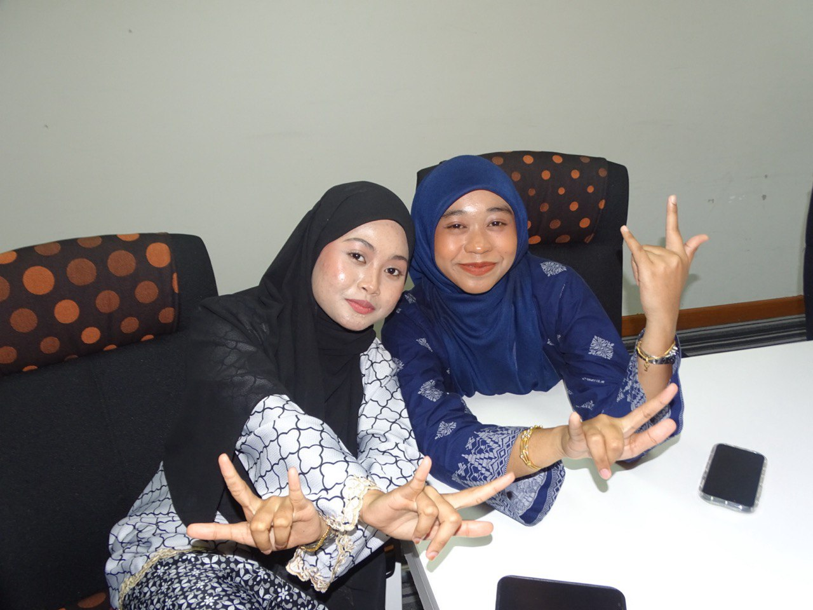 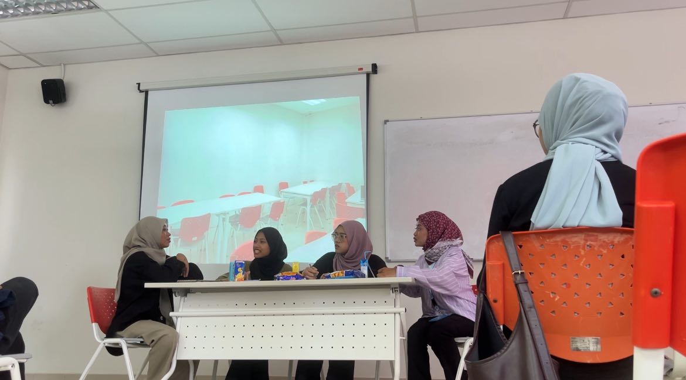 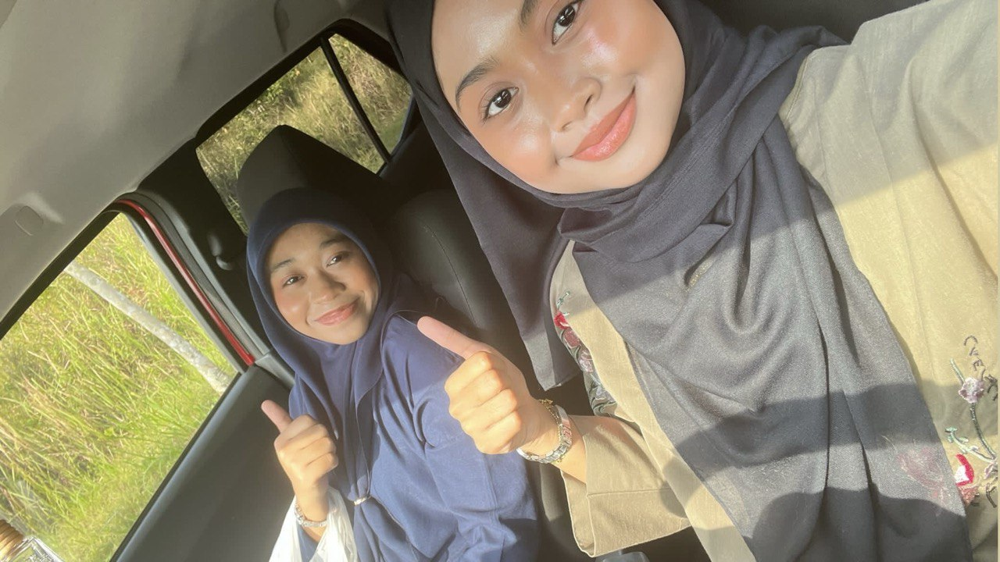 | |
| © 2026 Nadia Ameera | Last updated: 10 January 2026 | Created: 2026 |